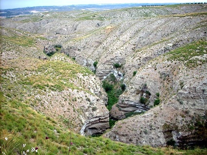

Un poco de historia
Los primeros asentamientos humanos en Villaconejos datan de la Edad del Bronce.
En el siglo XI, el pueblo fue reconquistado por los cristianos, y en el siglo XVI se construyó la
Iglesia Parroquial de San Juan Bautista, el edificio más antiguo del municipio.
En el siglo XVIII, Villaconejos se convirtió en un importante centro agrícola, y sus melones
comenzaron a ser conocidos en todo el mundo. En la actualidad, la agricultura sigue siendo la
principal actividad económica del pueblo.
Patrimonio histórico
Además de la Iglesia Parroquial, Villaconejos cuenta con otros edificios históricos de interés, como la Ermita de Nuestra Señora de la Soledad, el Convento de las Carmelitas Descalzas o el Puente de la Cañada Real. En el centro del pueblo, se encuentra la Plaza Mayor, una plaza porticada rodeada de edificios antiguos. En esta plaza se celebra todos los años el Mercado de Melones, una feria en la que se pueden comprar los mejores melones de la zona.
Naturaleza
Villaconejos está rodeado de un entorno natural privilegiado. El río Tajo pasa por el pueblo, y en sus alrededores hay bosques, campos de cultivo y viñedos. Una de las principales atracciones naturales de Villaconejos es el Barranco de Villacabras, un desfiladero de gran belleza. En este barranco, se pueden encontrar una gran variedad de plantas y animales, entre ellos, rapaces como el halcón peregrino o el águila real.

Actividades
Villaconejos es un pueblo tranquilo y acogedor, ideal para descansar y disfrutar de la naturaleza. En el pueblo, se pueden realizar diversas actividades, como:
- Visitar los monumentos históricos.
- Comprar melones en el Mercado de Melones.
- Dar un paseo por el río Tajo o por el Barranco de Villacabras.
- Practicar senderismo, ciclismo o equitación.
Villaconejos es un destino ideal para los amantes de la historia, la naturaleza y la gastronomía.